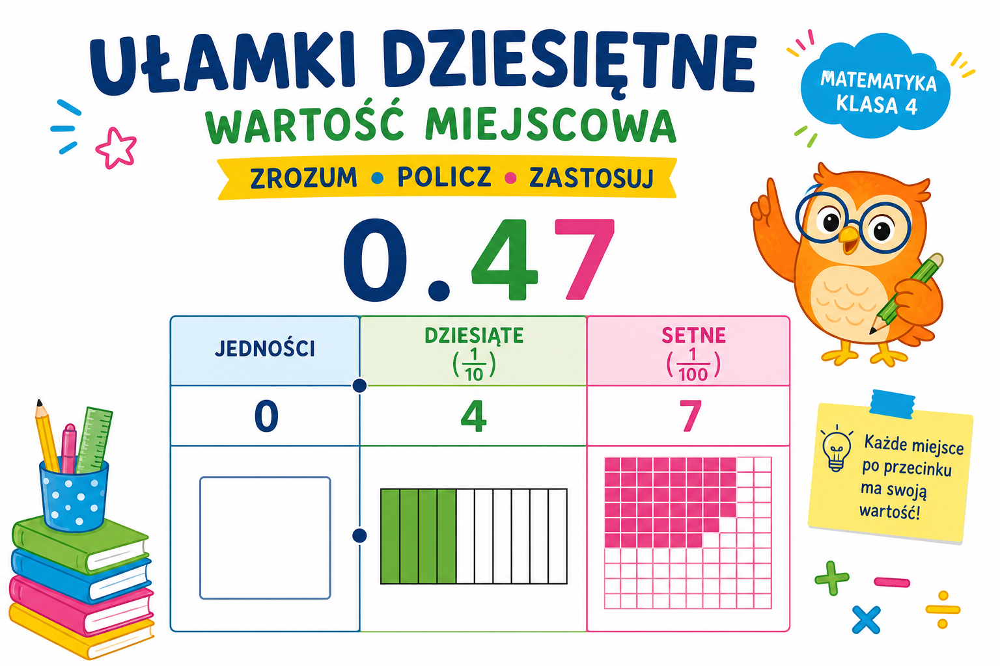

Co to jest? Що це?
Ułamek dziesiętny zapisujemy z przecinkiem — wygodny w pieniądzach, miarach, wynikach.
Десятковий дріб записуємо з комою — зручний у грошах, мірах, результатах.
Jak w szkole? Як у школі?
0,5 · 2,75 · 3,14. Przecinek oddziela część całkowitą od ułamkowej.
0,5 · 2,75 · 3,14. Кома відокремлює цілу частину від дробової.
Przykład z życia Приклад з життя
Bułka kosztuje 2,50 zł — to ułamek dziesiętny w codziennych zakupach.
Булочка коштує 2,50 zł — це десятковий дріб у щоденних покупках.
0,5 · 2,75 · 3,14